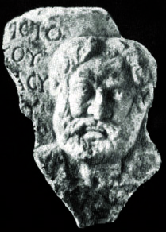
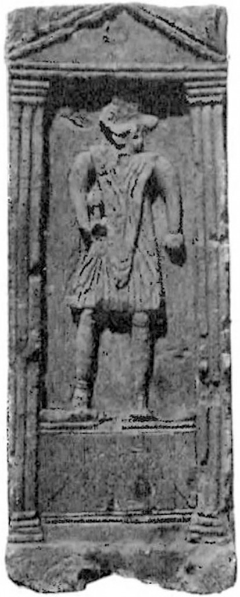
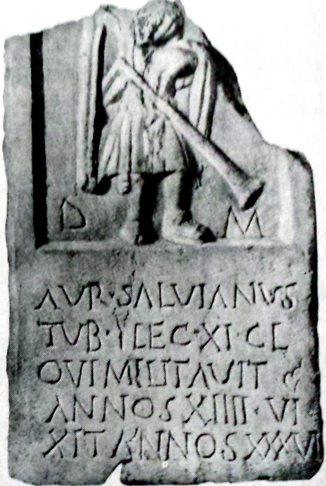
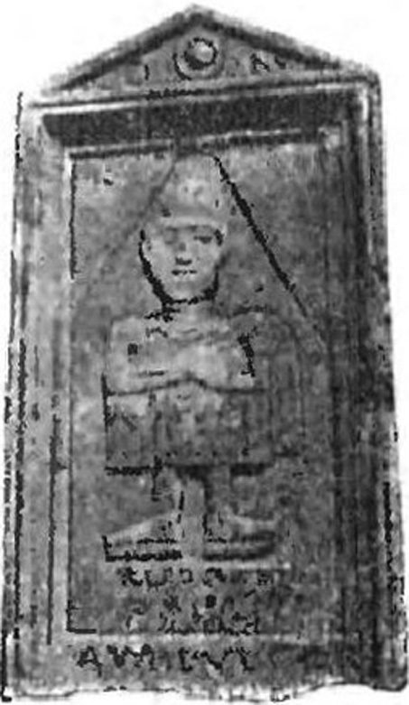
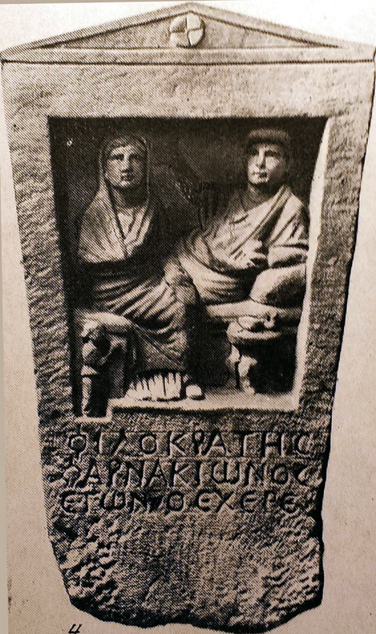
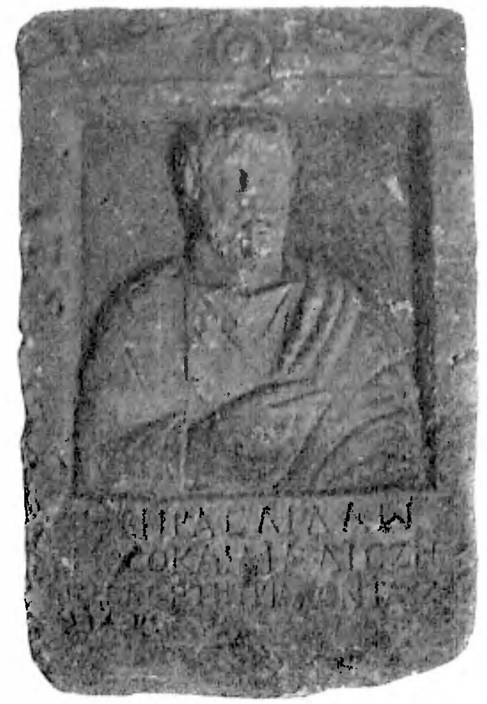
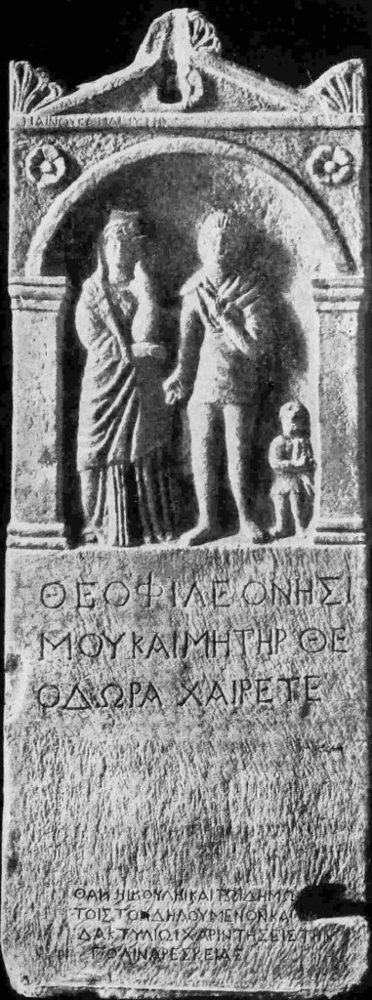
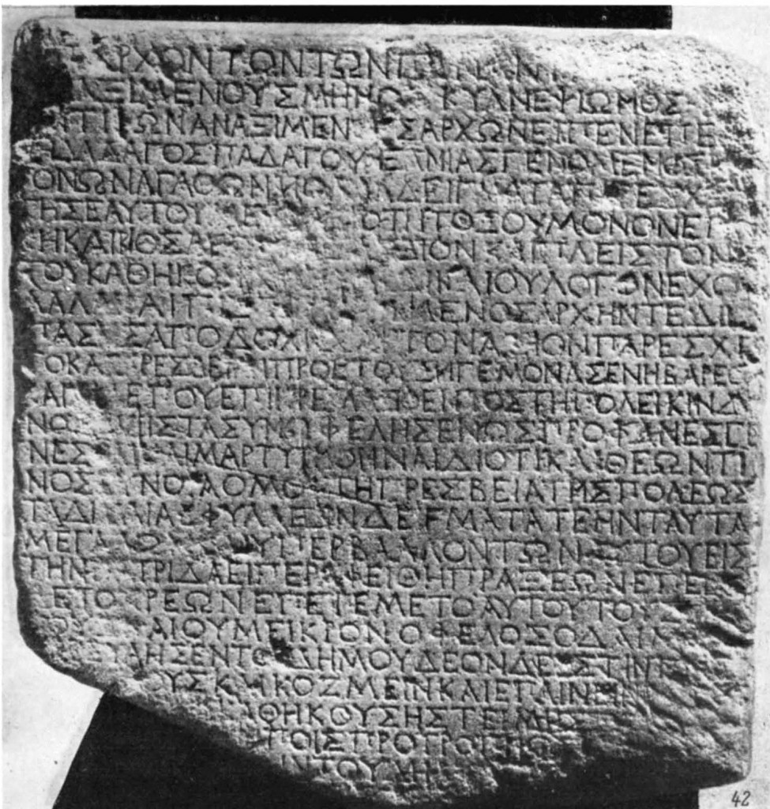

 Fig. 1. Portrait of the Aristeas of Proconnesus, Achilles was created on February 11, 621 B.C.
{kind=link}
11 (24) February 2016, 2750 marks of the birth of the founder of the ancient culture of the Aristeas of Proconnesus, who was born in Olbia-1 (Mykolaiv). The city was located in Mykolaiv on Camp fields near Alibas (archeological site Wild Garden) and today are built up.
This article is the result of my 35 years of research around Homer resolve the issue. In Mykolaiv published a book:”The city of St. Nicholas (Ancient History)” (2000), “Homer. The Immanent biography”(2001); “Exampeus” (2005); monograph “Mysteries of “Slovo o polku Igorevi, XII A.D.”(2005). In 2008 the “Iliad”, “Odyssey”, Hymns, Hesiod works and “Argonautica” Apollonius of Rhodes were found hidden autobiographical poems of Homer and developed methods of reading. Based on this methodology in lapidary inscriptions deciphered on plates at about 1200 (!) of archeological remains, that have been found by archeologists 200 years (attention!) in the Northern Black Sea coast, not in Greece. After determining the authorship and dating of each monument turned out that all these monuments created only six authors: Aristeas of Proconnesus (734-640), Cleopatra (662-591), Homer (657-581), Achilles (657-609), Scyth (633-582) and Anacharsis (620-513). Here in after those years B.C. The importance of this act can not be overemphasized. First, these autographs give us the right to approve all these authors, historical figures. Second, make it possible to recognize these authors, our countrymen since they were born and worked here in the Northern Black Sea. Thirdly, a large multi-colored base and processed primary sources suggest reading efficiency techniques hidden text. Articles posted on this site, my “Homer and Atlantis” and international – «Academia.edu». Today we are preparing a scientific multi “Handbook of primary sources of ancient texts hidden off the Ukraine”, which has an unknown history page described Cimmeria, Scythia, and Christianity of Kievan Rus.
The founder of the Scythian people Cimmerian king Targitay (16.07.776-8.10.696), August 7, 753. (Simultaneously with the foundation of Rome!) here in the land modern Mykolaiv built three city Olbia-1 (The Camp fields), Boreas (on Admiralty building site) and Neeson (Wide beam). Olbia-1 was named the city in honor of his daughter Stheno “happy”, city Boreas – in honor Targitay as “North” King and the city Neeson “Fins on the seas” in honor of the sailors. Boreas necropolis near the main entrance to the Ship-Building Plant by 61 Communars our archeologists have excavated part as well as the city Neeson in a Wide beam. From generation to generation in the family Targitay passed that they are descendants of Atlanteans, who founded here the city, that Homer in the “Odyssey» (XXIV, 304) called Alibas. This hexameter he admits: “I was born in Alibas”, i.e. “Phyla dead”. What Alibas was dead, when Targitay came here, true. Archeologists A. Smirnov, K. Gorbenko and Yu. Grebennikov defined the boundary to give the existence of “Wild Garden”: 1250-900 years B.C. Therefore Aristeas Proconnesoskiy posted here Hades, and Homer is a city nicknamed Alibas and Hades. In «Odyssey» (XI, 515) of the exact position of Hades – at the confluence of the Styx (Ingul) and Cocytus (S. Bug).
Since August, 758 B.C. Targitay as colonist Hylaea branch, was part Prytaneis, consisting of 10 branches. It was presented other Greek colonies in Athens. In Prytaneis board’s 500 representatives, 50 people from each phylum. Once, a year at each month Prytaneis led by a lot. This tradition was started during the time of existence of Atlantis and Alibas. Hylaea was actually pantry ancient Greece. It is through the sale of grain Targitay built the three aforementioned cities, where lived as Trojans and Greeks grain traders. In addition, Targitay founded on the way to Greece two more cities: 750 B.C. – Cimmerida, the city by the time Homer was called already Elay (Seddyulbahir, Turkey), as well as 743 B.C. – Tiras (Belgorod-Dniprovskiy, Odessa region).
Wife Targitay was on Cleobulina (21.08.774 – 8.10.704), daughter of Zoroaster (8.10.794 – 8.10.714) and his wife, the daughter of the Phoenician king Cadmus (27.08.819 – 8.10.751), who is credited with the creation of the Greek alphabet from Phoenician. Cleobulina was a prophetess, and she was born three daughters and six sons. Senior was a magician and soothsayer Mops, and then – Leipoksay and 10 February 733 B.С.- Koloksay. He was nicknamed Atlas for that, the site of the lost Atlantis, September 7, 695 B.C. founded the city Evpator (Kerkinitida). One of the daughters Cleobulina, Stheno (749-696), early age learned to read and write. Targitay was a poet himself and when he saw that Stheno likes to read, every time she brought the book from Athens, Egypt and Phoenicia. Stheno collected aphorisms, riddles, charades, acroversus. She first came to the hidden poetry in the Pentateuch of Moses. In 12 years Targitay Stheno loved his daughter, and she bore him two twins and 11 February 734 B.C. in Olbia-1 she was born Arpoksay (‘Greedy’ knowledge). At 9 years old he began to write poetry better than his father. His mother hid them from Targitay, but he had felt it was jealousy. Stheno Arpoksay taught reading and compiling hidden poems. With 12 years he has led a sailboat and sailed alone to various cities of Greece, performing tasks mother, who ran a Hylaea selling grain. 16 May 715 B.C. on 34 years anniversary Stheno in Olbia-1 Mops warned that Targitay with Stheno die abroad on October 8 from a young boy. Targitay once you glory in Tiras – Leipoksay and Kolaksay sent before rebuild Cimmerida (Seddyulbahir).
4 August 714. Targitay turn of Hades out 19 years Arpoksay and he sailed to Miletus. In 712 B.C. Arpoksay published in Athens his first poem “On precious stones” and as the best poet of Greece in 23 years received a palm branch. In 708 B.C. Arpoksay invented parchment and adjusted its production in Hylaea. By the 7th anniversary of the expulsion of Hylaea, August 4, 708 B.C., sailor Arpoksay cut hair and left only the forelock (herring). This forelock wearing his father Homer, sailor and exile Lycos. Currently Arpoksay was already oligarch was a council of Five hundred, and on August 13, 707 B.C. in 26 years was elected to the nine archons rulers of Greece. In 704 B.C. of his poetry lover, king of the Thracian Bosporus, Asporuсh, betrothed Arpoksay by Roman Claudius. In Cilicia in 698 B.C. of Arpoksay and Claudia was born and favorite son Autolycus. August 4, 698 B.C. Arpoksay published on parchment in Athens, the first epic of Europe “Arimaspeiya” on 400 pages in 3 books, which glorify their homeland Hylaea, Hades (Mykolaiv) and their parents Stheno and Targitay. On recognition of the first poet of Greece, Arpoksay was named Aristeas (“Famous”).
In May, 697 B.C. Aristeas with Claudia and two children came to Hades to his father and mother, but the reconciliation was short-lived. Stheno he brought a lot of interesting books and “Arimaspeiya” dedicated parents. Aristeas praised all the advantages of a mother mighty young Lydian king Gyges (723-652), he arrived in Olbia-1 and Stheno betrothed for himself in the 52 years of her birth 16 May 697 B.C. Gyges invited me to Troy Stheno and Targitay. When they departed from Troy to his Hylaea, Targitay quarreled with a young Gyges. In the forecast accuracy Mops, 26 years Gyges of October 8, 696 B.C. killed 80-year-old Targitay spear tipped with sea slope. Stheno rushed from the walls and broke. Aristeas and Claudia buried parents in Elay (Seddyulbahir). Authorities in Hylaea moved to Colaxais. Aristeas gave up power. He knew, that his brother was considered a foreigner. Thus, Aristeas of Colaxais remained on good terms and famine ships brought bread in three cities Hades.
October 8th 691 B.C. (In chronology Aristeas it was a landmark date – 85 Days of 85 Year!) Aristeas in Athens made a presentation about the history of the destruction of Atlantis 756 years ago and that his family are descendants of the Atlanteans, who then ruled Greece. It’s not like the Greeks because they believed Cimmerians barbarians. He said that Atlantis was located in Tauris (Crimea) in place Kerkinitida (Yevpatoria) and died (in modern chronology) October 8, 1447, B.C. after the explosion of the volcano (Santorini) on the island Thera (Tera) from the tsunami. This date coincides with the explosion of Santorini scientific data. Homer wrote that modern big wave passed the Dardanelles and the Bosphorus, has risen to the level of Heracles pillars, and washed Atlantis in Pontus (Black Sea) during a strong earthquake. For 4 days before the priests warned about this and 10 prominent families on 10 ships sailed to Hylaea (Mykolaiv) here and founded the city.
27 September 681 B.C. Aristeas founded the city of Feodosia. Autolycus at 680. Moved from Cilicia in Sidon (Saida), then his wife, Greek Amphiteie, was born on October 8th 677 B.C. have mother Homer, Clymene. At this time, 14 years tycoon secretly built his own money walled city on an island in the Sea of Marmara. 28 August 675 B.C. Aristeas built the city Proconnesos (Marmara) and they spent the last 35 years of his life. On the island were huge deposits of white marble, which is mined today. As an oligarch, Aristeas amassed his fortune by selling bread, parchment and marble. In addition, Aristeas realized that it is the lyrics, written on marble, able to overcome the millennium and tell the truth about their life when labels are clandestine manner. Homer writes poems in secret “Principia” Euclid that the emblem of the city Proconnesus (“Forelock”) was the trident of Poseidon, the chief god of Atlantis. Today it is the emblem of Ukraine.
Father Achilles and Homer, Lycos Cimmerian king, was born in 676 B.C. in Olbia-1 Spargapithes and Maya, brother and sister Colaxay king (733-666), son Targitay. Maya, from birth to Pan a son of Gyges 4 April 674 B.C. Panticapaeum a “The crib of Pan”. This date is considered the founding of her city. In 673, B.C. Aristeas issued in Athens “Epigraphs”. And on April 10, 672 B.C. in Maya in Olbia-1 from Aristeas unsurpassed master Hephaestus was born. His pseudonyms were Leohar, Phidias, Zevksip, for they can explore his creativity. At 9 years old Maya people, Spargapithes, sent him as unrelated, from Hades. Hephaestus went to Aristeas in Proconnesos and struck his school of art, moved to Lemnos.
18 August 666 B.C. Gygus killed Colaxay-Atlas. Authorities in Hylaea passed to his son, Spargapithes, grandfather Homer’s middle name. Flared 14-year war between the sons Colaxay and Gygus. Again Aristeas, as the eldest of the family, was entitled to the throne and renounced power. In 664 B.C. he and Claudia came to Hylaea. On the way back from Olbia-1 to Proconnesos ship stopped on the island Berezan’ now, and there from snake bite 3 October 664 B.C. Claudius died. This clarification of the myth of Orpheus and Eurydice.
In ’13 Lycos fell in love with 23-year-old Ida, daughter Claudia, and Gygus. Gygus began their chase in Hades. Lycos on the ship fleeing from persecution took her to the Caucasus. In Alcinous and Arete in Sсherie (Batumi) 28 October 662 B.C. Cleopatra was born that grew there to 7 years.
Lycos in 659 B.C. sailed to Autolycus in Sidon. There he fell in love with Climene daughter of Autolycus. A year after her appointment, he sent a ship to Sidon. Leda (Climene) was already pregnant by Zeus (Autolycus). On the way to Hades in Cyprus she gave birth on a ship Beautiful Helen 13 September 658 B.C. (Aphrodite was born in Cyprus with sea foam!). 20 days they arrived in Olbia-1 (Mykolaiv). 14 September 657 B.C. Of Lycos and Climene born twins, the first Zetes (Homer) in Olbia-1 and September 15 in Borey – Calais (Achilles). In the myth of Achilles says that at birth his mother holding the heel was lowered into the waters of the Styx (Inhul) to immortalize and was placed on Inhul only Borey.
August 13, 652 B.C. in Paphlagonia, at the Battle of Citor, Spargapithes avenged his father and killed Gygus. And established peace and in 19 years Hephaestus returned home from Lemnos to Hades. Here it from Spargapithes buried in the cave (in modern Yacht club) Maya and Climena. From Scherie (Batumi) Lycos the eldest daughter, Cleopatra, with Ida returned to Hades in 654 B.C., when Homer and Achilles were 3 years old. Childhood in Hades was happy in the life of Cleopatra, Helen, Zetes and Calais. This, they repeatedly mentioned in his works. Father Lycos teach sons and Cleopatra military, naval affairs, astronomy, and hypnosis. Climene taught and Cleopatra with 3 of their children – literacy, languages, literature, history, and Hephaestus – art. Homer’s mother called herself to centaur Chiron (“Hard”) teacher. Homer wrote that it was invented for him Climene word Centaur (“Bad Taurus”), given the Scythian Pan, who was born in Tauris.
Hephaestus learned the art from his father Aristeas, whom the Greeks called accidentally by Olen (“Working hands”). These are found mainly in Chersonesos, 31 Aristeas autographs and it is thanks to Anacharsis. October 4, 575 B.C. he founded the city in Tauris Chersonese (Sevastopol), which is named in honor modern of Mykolaiv peninsula. Anacharsis predicted that the city will survive Olbia-2 and moved here the remains of the mother, Penelope, and monuments Aristeas. On Fig. 2 shows three autographs of Aristeas Proconnesoskiy, which are full of inscriptions in Latin. Hidden text monument (Fig.2.1) with 29-year-old self-portrait dedicated to the 10th anniversary of the exile of Aristeas’a Targitay from Hades, which was on August 4, 704 B.C. In the monument (Fig. 2.2) “Trumpeter Claudian Legion” announced the death Parents from Gyges of October 8, 696 B.C. and birth May 16, 696 B.C. by Claudius 2 twins, brother and sister. The third monument is a tomb (Fig. 2.3), it is dedicated to the death of Autolycus on 8 October, 646 B.C. Aristeas wrote that placed him 2nd November, 644 B.C. in the cemetery of Elay along with Homer.
   2.1. 2.2. 2.3. Fig. 2. Autographs of the Aristeas of Proconnesus 704, 696 and 644 B.C.
{kind=link}
{kind=link}
{kind=link}
In the battle in Ionia Spargapithes was cowardly murdered in the back of son Gyges, Pan, 29 July 646 B.C. And on September 3, 646 B.C. father Homer Lycos (676-596) people elected king Hylaea. On this occasion, the money Aristeas his son Hephaestus in Hades cast golden fleece. His Face was awarded on Sept. 3, 646 B.C., as a symbol of royal power Hylaea. Fleece probably still existed in those days and shown in the gold Scythian pectoral IV B.C. (Fig. 3).
{kind=link}
Fig. 3. Detail of Scythian gold pectoral, September 3, 346 B.C.
We know that in ancient times the wealth was estimated the number of sheep. But pay attention that the main idea was of Aristeas, that the fleece has become a symbol of spiritual wealth because it was made of parchment! Perhaps because Homer (left) is on the right hand plucked hair fleece, as an act of beginning production of parchment. And she was devoted pectoral 300th anniversary making it the Golden Fleece in Hades Hephaestus. 50th-day pectoral creation coincided with the birthday of the 83-th anniversary of the Scythian king Ateius (right), September 3, 346 B.C., a descendant of Homer in the 6th knee (Fig. 3).
Pan, the youngest son of Maya and Lycos brother, returned to Hades and wanted to marry on Helen. But Climene and Lycos quickly gave her in marriage to Hephaestus. Then he captured Climene and Achilles with the Golden Fleece. Lycos a battle with him wounding him in the arm. Pan burned his 6 ships, that were on the beach. While the Trojans lived here more, than Achaeans, supporters of Lycos. Ida killed her husband because he took Achilles for Pan. Lycos with Ida (mother Cleopatra) was forced to flee secretly at night to Aristeas in Proconnesos. With Cleopatra from Hades in May uplyly 646 B.C. as Homer and Helen with Hephaestus, hiding in caves. It was here, 20-year-old started the Trojan War.
To Lycos Aristeas helped to settle in Elay (Seddyulbahir), who built their ancestor Targitay. Zetes at the beginning of 645 B.C. began to swim with the ship from Elay to Proconnesos for Aristeas. Training lasted for five years before his death. It’s obvious that they both adored each other. Aristeas saw his blue grandchildren of Climena successor to the business and all its Homer taught not to which the knowledge. It was then called of Zetes Aristeas Plato for the breadth of his knowledge for his age. A carefully studied Zetes “Arimaspeiya” by Aristeas concluded that the epic is original and no one borrowed. Moreover, since the epic Targitay was named Homer, that Cimmerian, on his 13th anniversary Zetes took the name for himself Homer as a nickname. It’s like Aristeas and he gave to him a cup. At 4 years and Homer worked out a plan to build a fortified city of Olbia-2 (v. Parutyne). Locations Aristeas knew, but as a sailor saw many castles.
In Hades Calais (Achilles) with children, 9 years teach Scythian military affairs. This case and he continued a prisoner, although his mother and he were under constant military guard of Pan. Climena just in case, when wearing a dagger and do not come near to his of Pan. Cleopatra as Gyges granddaughter remained in Hades to help release from captivity Climene and Calais. She has negotiated with Pan, but no amount of money would not dismiss them. To Calais 15 September 642 B.C. was turning 15 years old. He was quite tall and powerful and could be threatened of Pan. He decided on this day of his death. These plans Cleopatra learned quickly convened the morning of his boys, who plucked thousand. When their parents came to the house of Calais on the modern Camp fields of Mykolaiv, they waited for this a thousand, who came to the defense of their leader. Parents retreated and did not fight with them. Since Calais called Achilles (“One as a thousand”)! Pan destroyed their relatives and rescue problem arose Climene and Achilles.
Cleopatra came to Elay to 13 years of Homer. In ’17 she had ship through two the sea. There’s Elay it launched the Platonic Academy, which became the first members Aristeas, Hephaestus, Cleopatra, Homer and Achilles. Aristeas 89 years, first saw and fell in love with her beauty, talent, and called his Muse. There she consecutive Homer and Lycos developed a plan to rescue Climene and Achilles. According to this plan in November 642 B.C. Borey trading ship arrived as if from Phoenicia. His friend brought of Lycos king Lycian, Sarpedon. Cleopatra on birthday Climene, October 8, 642 B.C., watered it and persuaded to surrender with Pan. Pregnancy reduce suspicion had to escape. While “Phoenicians” traded ensuing winter, and then spring. They all have become accustomed in Hades. Climene approaching families. Pan on this case held a feast in his Boreas. Late at night Climene and Achilles go to house, where they waited for Cleopatra. She lulled hypnosis protection and all of them, and took a Maya, came down to the ship. There they were Scythians of Styx (Inhul) quietly go to Cocytus (S. Bug) and from there they have set sail. In the Bosporus in the ship Climene born second daughter from Pan, Clytemnestra.
20 July 641 B.C. Aristeas, stunned by this problem Cleopatra, of Lycos invited, go, Climene, Cleopatra, Homer and Achilles to his Proconnesos. There he Elder kind of made a will in Hades Hylaea transfer their rights to own three towns, built by his father Targitay. Cleopatra and Homer oligarch appointed managers of the money for the construction of Olbia-2 (Parutyne village). Asked to name it in honor of the city of Olbia-1 (Mykolaiv). Then Aristeas wrote a letter to his friend, the mighty king of the Thracian Bosporus, to Kotiy Asporuch. And he wrote a letter to Pan, that he is the guarantor of the construction of Olbia-2. If Pan Homer and Cleopatra decides to prevent, he will have to deal with it. This covenant of 20 July 641 B.C. cited many monuments as ownership Hylaea. Aristeas commanded to carry his ashes home and asked after his father Targitay his birthday, July 16, every 4 years to organize the Olympics. Aristeas commanded by Homer programs designed to teach children from 8 to 12 years. The first school for children from three cities Hades, which taught children to read, have launched mother of Aristeas, Stheno. Classes are held each year from 4 October to late April after 728 B.C. Aristeas also helped this mother. After them, the program continued to Maya, and Climene and Cleopatra, until Anacharsis, who founded the first school in Olbia-2, and in Olbia-1. Over the years 753-575 B.C. in the Black Sea Hylaea Cimmerian-Scythian kings was built 11 cities, two Olbia, Borysthen, Neeson, Tyras, Eupator, Theodosia, Pantikapaion (Kerch) Nykiy (island of Berezan) Alektor (Ochakiv) and Chersonese (Sevastopol). They dominated democracies, there was slavery and they went into the Pritaneis composed Hylaea, which of 592 B.C. was called Scythia.
Aristeas instilled Gomer love for Egypt and command him to find their detailed evidence of Atlantis, along with Cleopatra he set them the task to find a way to publish evidence of Atlantis, for the Greeks and hear about what “barbarians” once owned them. This covenant was fulfilled by Homer in “Dialogue” Plato. It was actually created Aristeas Institute of memory and their descendants instilled a love of history homeland and their ancestors. These kind birthdays were recorded live and date death ancestors, who worked as a clock. Anyone who can not surprise here is the dates of events such times. So, it is based on Aristeas Egypt developed its calendar, which almost no different from today. It normal year of 365 days began on the birthday of his father Targitay and it was 1 day to 1 year, which today corresponds to the date 16 July 776 B.C. At the suggestion of Cleopatra Antesteriy month (February-March) added 1 day in leap years. Dates of events deducted in the days and years from this initial date. Homer, for example, was born in 61 days. 119 year and it corresponds to the date September 14 (776-119=) 657 B.C. This calendar, for example, used the descendants of Homer, Luke and John the Evangelist at the time of a new era. Hephaestus tried to carry this calendar in its affiliates but Solon forbade it. Therefore, this internal calendar remained a family Targitay. Then arose the problem of how to enter a start date calendar history for future generations in the form acceptable to the Greeks. Anacharsis under pseudonyms Callinus and Pausanias, it invented the Olympics in Greece, when written as if for the first time the names of the characters. So there were numbers on calendar calculations performed Olympics, actually since the birth Targitay 16 July 776 B.C. And he devised the first names of the winners read hidden text on the Scyth, winner of the 10 Olympics Scythian. Anacharsis wrote on July 16, 520 B.C.: “Dozens of followers in Ionia in Cleopatra and Scythians after the first Olympic Games in 1 d. 148 p. (July 16, 628 B.C.). Anacharsis 28 Olympics”. This is direct evidence that the Olympic Games were established in Cimmeria.
Aristeas first noticed that we inhabit the globe, he instilled a love of geometry Homer, who then wrote his “Elements” under the pseudonym of Euclid and Pythagoras. At 19, Homer inflow in Sidon (Saida) to Amphitey grandmother and she gave him a big Aristeas scientific work on Ocean river that flows around the globe. In describing the shield of Achilles in the “Iliad” is a modern Ocean flow around Mykolaiv Peninsula. Aristeas as a sailor laid the foundations of astronomy and gave the names of the northern constellation. Minor and Ursa Major and Leo constellations were named him so because Mykolaiv half-island looks like a bear or a lion (Cape Hippolay – “Great Lion” Herodotus). “Arimaspeiya” Aristeasa not come down to us because it is not about the Greeks. Anacharsis, fulfilling the will of Homer, wrote on July 28, 521 B.C. 60th anniversary of the death of Homer: “I swear that the last 15 years every year issued his own in Athens 100 copies of “The Iliad” and 850 copies of “Arimaspeiya” as a cure for death, Aristeas”.
Preserved texts of Aristeas under pseudonyms of Kalin and Anaxagoras, they read his hidden text. As a philosopher and sage Aristeas first mentioned under pseudonyms: Socrates, Pitak of Mitelena, Thales of Miletus, Levkiyip, Pherecydes of Syros. As a poet and bard, he had nicknames: Orpheus, Olen, Hipponakt, Xanthos, Evmolp as poet and comedy actor – Crates of Athens and Timarch as a sculptor. Aristeas, and as a writer under the pseudonym logograph Hecataeus of Miletus, wrote “World Survey”, which was first mentioned and marked one of the earliest European maps Scythia and Kerkinityda colony, where he outlined the Scythian city Cardis. It is now clear, that this he describes (“Heart”) Atlantis. Aristeas most significant achievement is the lapidary inscription on the 31 monuments, that are autographed and diaries (Fig. 2). They came to us from the author – it has no price. These autographs indicate, that everything enjoyed Homer and his entourage in the methodical plan was devised by Aristeas and his parents, Targitay and Stheno. Without these autographs were very difficult to deal with those, who also owned one. In the latter autograph, compiled 20 days before death he confesses, that deliberately sacrificed their lives for the love of Cleopatra. 21-year-old Muse is understood advance and secretly sailed with Hades in Proconnesos August 1, 640 B.C. to Aristeas in 93 years. After 24 days amorous pleasures Orpheus dies in the hands of the Muse 25 August 640 B.C. Three days before it to teacher Homer influx Proconnesosus and found him dying in the hands of his sister and wife. At the time of Cleopatra from Homer has given birth to a daughter Tyro and two sons, twins, Agathyrsos and Gelonos in Hades.
At the funeral, the first poet of Greece in the city of Proconnesos assembles many fans from Greece, Thrace, and Hylaea. Aristeas prepared in advance inscription memorial to himself and Homer put it in the town square. Homer of Aristeas after burning ashes buried in Proconnesos in the cup, which gave him a teacher and 13-year anniversary. Birthday Aristeas, February 11, 640 B.C., his son Hephaestus manufactured and supplied in Proconnesos Statue father, and Homer filled it the inscription. Homer considered him the greatest poet and wrote, that a just and joyous Aristeas brought him to the people. I should say that Hephaestus, Cleopatra, Homer and Achilles, as always happens, the grandeur of his figure realized only after death. And then all of life was the fulfillment of that program, he had to draw them. Achilles almost a year with Homer visited Proconnesosos and myself visited Elay Aristeas. Homer wrote, that his visit was every holiday. Oligarch each and servants brought gifts and with the joke, distributed them.
   4.1. 4.2. 4.3. Fig. 4. Portrait of the Aristeas of Proconnesus full of Achilles
{kind=link}
{kind=link}
{kind=link}
Figure 4. 3 shows sculptural portraits Aristeas, created Achilles. He has no price because this lifetime portraits. Compare Fig. 2 and Fig. 4, combining on the top of a triangle in the center of which is inscribed circle. This is additional evidence, that the three portraits dedicated to Achilles of the Aristeas of Proconnesus. First portrait (Fig. 4.1) was made Achilles the day of his 15th anniversary, September 15, 641 B.C., impressed the first meeting with Aristeas, which occurred immediately after it was rescued from captivity in Cleopatra from Pan in Hades. A week later, on July 20, 641 B.C. was turning 90 years since the birth of his wife Claudia and Aristeas Proconneskiy invited the whole family, where he compiled read Testament. This is stated in the hidden text of the 1st pillar. Obviously, Aristeas the picture of Claudia and Achilles showed here Orpheus with Eurydice. After 7 years, February 11, 634 B.C., approaching 100th anniversary of Aristeas, that they have noted in exile in Elay of whole family. Achilles performs the second portrait of Aristeas (Fig. 4.2) on its 23-th anniversary, September 15, 634 B.C. This portrait was made in a dispute with Achilles with Homer and Cleopatra. They said, that he can not convey the grandeur of the Master. A 43-year birth mother Climene, Achilles made her a present (Fig. 4.3), which depicted his family of Aristeas in 43 years. Claudia was 40 years, and their son Autolycus, father Climene, was 7 years old. Fourth, the most successful portrait (Fig. 1), Achilles made on February 11, 621 B.C. to Aristeas 113 anniversary. In the hidden text inscriptions Achilles noted, that it as admiral, was considered a Hero of Greece in Parthenon of Athens, he was very proud of it.
Aristeas still alive gave Lycos, Homer and Achilles service in Troy. Since 15 years, Homer began the following year his 12 labors of Hercules for Paris (Evristey) before 27 years and Achilles as Theseus. Lycos was a great strategist. To 20-year-old Helena to marry almost all the heroes of Greece, but he gave her to Menelaus, and for his powerful brother Agamemnon – Clytemnestra. Then he offered to Priam taxes for passage of ships in Pontus (Black Sea) the Hellespont (Dardanelles). The whole family, they began to build ships in Elay and established fleet. Immediately after that went bankrupt and Miletus known war Lydia (Troy). And then of Paris stole Helen of Menelaus and not returned it for any money, he offered rich Agamemnon. In May 630 B.C. began a 10-year naval Trojan War, in which Lycos and Achilles with his fleet, after capturing of Helena, sided with the Greeks.
All this time, Cleopatra remained in Hades until her Pan is not forcibly seized from him and she gave birth to twins at first, and then Pers, her future killer. After 3 years she ran away from the Pan, and the children and took away the golden fleece in the Caucasus in Scheriya (Batumi). For two years, she settled on Lesbos, where she took lessons on the instruments and singing in Syrian musicians and singers. From there he sailed to Athens and its first appearance was a splash. The men were amazed at how she deftly managed the boat and then Amazon struck his fine clothes, singing and poetry women, who always gathered around it. August 2, 631 B.C. under the name Sappho Cleopatra in Athens was recognized as the first poet of Greece, and on October 28 she founded the city Nykiy on modern Berezan’ island. It was the springboard for the competition on Tendrivska spit and for the building of Olbia-2 (v. Parutyne).
At the end of 630, B.C. Cleopatra went to Scheria (Batumi), took the children and the Golden Fleece, which decided to take a Lycos in Elay. But, when she arrives at the Bosporus, the current it applied to the opposite today. In the Strait became great trust Charybdis, which blocked the passage. She learned how the trust and realized that we had to pull over to the mud volcano Scylla and then pass between rocks Planktos, which could ship broken. Current decisively and quickly it 17 July 629 B.C., as Helmsman, held the first ship between Scylla and Charybdis through Planktos risked their lives children and the father brought the Golden Fleece in Elay. This was the story of Homer to “Argonautica.”
At this time, the sea was already the Trojan War (630-620 B.C.), in which the squadron Achilles and Agamemnon destroyed about 800 Trojan ships. After that the ship could leave on the shore near Troy, not to be afraid of attacks from the sea. Homer in this war was not involved and 7 years searching for evidence of Atlantis in Egypt. Despite the war, Achilles not forgot about Cleopatra and each his own, Homer and her birthday they have noted in Nykiy. 16 July 628 B.C. Cleopatra to Achilles, fulfilling the covenant Aristeas, held the first Olympics in Scythian Pontus stadium (Tendrivska spit), in which Achilles then 5 times winning competitions run. Immediately after the 2nd Olympic Games, July 20, 624 B.C., Cleopatra with Achilles was founded city Olbia-2 by Aristeas plan. Achilles made a sculpture of Zeus, surrounded 9th Muses and put it on the mountain, as a beacon for sailors. This event gathered there Cleopatra first 727 settlers Greeks, who planted, harvested and sold the harvest. After 7 years of Cleopatra began to build fortress walls around Olbia-2 and brought them to the land for 24 years before his death in 591 B.C.
Homer returned to Elay after defeat by Achilles Trojan Navy noted in the Parthenon of Athens, 14 August 621 B.C. and named a Hero of Greece. The final phase of naval warfare took place in the Black Sea and it still managed to Homer. Last 20 Trojan ships took refuge in the Pan in Hades (Mykolaiv) and threatened the construction of fortress walls Olbia-2 (Parutyne village). Cleopatra addressed and the Achilles of Homer came to her Nykiy with a squadron of 10 ships. 10 and 27 March 621 B.C. there was two naval battle, in which some ships commanded: Achilles, Homer, 17 years Scyth and, mother have 7 children, Cleopatra. These Trojan ships were double the Greek. The first battle took place near the island of Berezan’, it Achilles destroyed four the ship at a distance by Greek fire. On Fig 5 tracings flashy text and picture. Explanation indicates that this was a gift to Cleopatra Achilles in connection with the protection of both of them father in the 55th anniversary of their father, Lycos, May 13, 621 B.C. From the Fig. 5 is seen as the ship of Achilles during the battle runs between two Trojan ships burn Greek fire them.
{kind=link}
Fig. 5. Graffiti on a jar, found in Tyras
A second battle took place near the island Levka (Snaky). The Trojans were afraid to approach the Greeks. Achilles did little principle for the island, and at Berezan’ left one ship of Scyth, who courageously brought their entire fleet to Levka. And there began a close fight. Easy and fast Greek ships left the for-gardens, burned them Greek fire, heavy, rammed of clumsy ship Trojans and all of them sank without loss of their own. Cleopatra then in scrapbook Feano recalled the fight with horror. Then Homer for the first time visited Olvia-2 and seeing the work of Achilles surrounded sculpture of Zeus at 9 Muses, said that Achilles was trying to outdo itself Hephaestus. City him very happy, because for the second year are already acting theater, where plays were of Aristeas, Homer and Cleopatra. Then Homer visited the first time and at the 3rd Olympics in Tendrivska spit 8 September 620 B.C. In Elay by Penelope from Homer was born and Ariston (Anacharsis), and in October there was a comet Halley. Then it was on its 75th anniversary and this is the earliest evidence of it. The land Trojan War lasted from September 619 B.C. to March 609 B.C.
612 B.C., October 8th., died in Kotiy Asparuch, king of the Thracian Bosporus, arose the threat of destruction by Pan of construction Olbia-2. Then Cleopatra sent Homer and his 34-year-old daughter Tyro to Pan in Hades, allegedly after a quarrel with her. Those in their 63 anniversary invited her to choose the date of their wedding. On the feast at Borey in the presence of famous budyny, May 13, 611 B.C., Tiro poisoned of Pan. And it was a gift for the 65th anniversary of Lycos. In Hades the struggle for power started between the 3-sons of Homer and Cleopatra with 3 children of her and of Pan, who headed Pers. Cleopatra sent of Gil (Scyth) through to Troy, where his father and brothers fought. For two months with the support of Agamemnon and Achilles, Homer and Lycos gathered 54 ships and 3,000 soldiers. Achilles a thousand of these soldiers, exiles from Hades, left home to confirm power. 14 August 610 B.C. armada arrived in Olbia-1. The soldiers first ship with consecutive were dressed in Trojan form so as not to frighten Pers and his Trojans. Lycos gave them all gifts – Celtic axes and Climene – Cleopatra dishes. Homer described it in secret verse of the 18th song “Iliad”. A year after it learned of the hidden poetry, I read in the newspapers – archaeologists along with “Wild Garden” (a suburb of Olbia-1?) found a collection of Celtic axes! There are amazing convergence… Across 35 years a power in Hades came back to Lycos. He left there to reign Cleopatra, while he and Homer returned to Troy. In October 610 B.C. Cleopatra expelled Pers from Hades. Gil commissioned 3-manage cities in Hades, and she returned to Nykiy for the construction of Olbia-2 held the Olympics and editions works of Homer.
As for the departure of Hades of Lycos, Homer, and Climene, Cleopatra morning in the modern Camp field was laid Demeter temple in honor of the mother of Homer, Climene, and her grandfather, Aristeas. The evening at a banquet on October 8 in Hades 610 B.C. Climena the occasion of its 67th anniversary the year before death, she bequeathed Homer, that he buried her in Nykiy (island Berezan’) and put in grave- stone with the inscription, she is the mother of Homer. Achilles at this time remained at Troy and not armada sailed to Hades. September 15, 609 B.C. in front of everyone at Troy Achilles killed Hector. Cleopatra repeatedly warned him that Priam and Paris trying to shove him to the young person and kill him. But he did not take any of her letters or warnings of Homer, which while to Cleopatra sailed to a Nykiy. Achilles dismissed the guard and stayed overnight in a 16-year Trojanes Polyxena. In the morning on October 8th 609 B.C., went to the bathroom 40 soldiers of Paris and its straps strangled. So much for the myth of Achilles heel, which allegedly resulted in the storming of Paris of Troy. This happened six months before the assault. So, the Achilles heel of any Hero is a woman. Though, according to Homer, 20 women then tore Polyxena…
Homer Cleopatra learned about the death of his brother, in a ship with Nykiy (Berezan’) immediately came to Troy. Before this remedy only the third attempt redeemed her son’s body and arms of Paris Priam and left himself. Cleopatra as Gyges granddaughter had great authority in Troy. She went into the city and cursed him for his cowardly murder of his brother, who in a fair open battle killed Hector. Cleopatra took the weapons of Achilles and Helen – for washing the feet of his brother. And then decided another problem – the Greeks demanded to bury Heroes of Hellas in Athens. But Cleopatra prudently took with him Ahoranomus from 3 cities Hades and they assured Greeks that Achilles was born in Borey of Hylaea. 40 days at the Camp field was near Olbia-1 thousand of Scythians and Greeks commemorated everywhere Hero. Cleopatra bought the house in Olbia-1, where the museum has arranged with the work, poems and arms of Achilles. During the farewell publicly called Cleopatra create the epic of Homer about Achilles that he always remained alive in the offspring. Then the body is burned and the ashes buried as Admiral, the “floating” island Levka (Snaky). 12 March 609 B.C. Troy was burnt and Lycos son of Achilles, Neoptolemus (Pericles), retaliated and killed for him with Priam of Paris.
After the burning of Troy, Homer went from 12 ships to sea. However, after 15 days of sailing in the Aegean Sea, he got into the country Lotophages (“Delicious food”), which was Elay (“Oliva”). Upon arrival home, a month he could not tear seafarers from (“Delicious foods”) women. From there went to Pontus (Black Sea). In the Bay Laestrygonians (t. Balaklava) 16 July 608 B.C., from a powerful earthquake killed 11 ships. Homer survived because not got the ship in the bay. When the influx Circe (Cleopatra) Island Aeae (Berezan’), the father brought Lycos from Elay have Climene. Its rich young man executed – for revenge of Troy. Her ashes buried in the Necropolis and father sailed for Elay. Homer remained for a year, he could not appear to the wives and children of those killed 600 sailors. There he made the inscription on the stone for mather. Details about this in the article “Five autographs of Homer” posted on the website “Homer and Atlantis” and the book “Homer. The Immanent biography“. This stone is found in the Necropolis of Berezan’ in 1900 Skadovsky amateur archeology. He has not survived, but he left a sign 3 photo and tracings. By drawing Necropolis by V.V. Lapin 1960s, I found the grave of the mother of Homer on Berezan’ in 2002. Then with a leader of the expedition of the Institute of Archaeology of NAS of Ukraine V.V. Nazarov, an archeologist from God, got to her side of the sea. The researchers her and assured, that the grave has been destroyed during the war. After the tragic death of V. Nazarov in 2004, the erosion of the sea so swallows grave Climene…
I shall result in one more interesting inscription (Fig. 6). This chance discovery in the territory necropolis of Olbia-2 (v. Parutyne) was found during excavations in 1920 by S.A. Semenov-Zuser. And then was transferred to the museum of local lore Mykolaiv. Not tested – whether it remained after 96 years? It turned out hidden text that this is an autograph of Homer, he compiled 21 July 607 B.C. After a year, it like Odysseus on the island Aeae (Berezan’) in Nykiy Homer to Elay sailed on the same ship. He decided to leave Muse inscription dedicated to Achilles because of the approaching 50th anniversary of both. The inscription is interesting because it gave Homer his brother Achilles characteristics as a man and a warrior. And say that it does not meet Christian morals for 6 centuries before Christ?!
 Fig. 6. Autograph of Homer district 21.07.607 B.C.
{kind=link}
Here’s how hidden text reads: “1). Achilles leader killed in 85 days of 167 years. The wrath of God Cyanean Rocks of Typhon crushed in 85 days in a 16-years-old virgin. Reviewed brother Homer. 2). Before sending the ship to the island of Cleopatra for 57 days before the 50th anniversary of Achilles, Homer sings brother in 5 days of 179 years as atonement for his guilt. 3). For generations said: Brother has been good for many, exemplary sample itself a large, extremely honest. 4). Achilles was honest, wild, in life admired by many, a must in the performance of duties, fiction laws and followed the word. 5). Other rulers fair of Targitay, Stheno, wise Aristeas Proconneskiy always praised. So himself assessed reserved. 6). The open-born fighter, in anger sharp in a mortal blow in a dangerous war, most of all useful. Surroundings respected him, was oppressed by command. 7). Evidence of my brother Homer Achilles. After the murder of 85-day with Cleopatra was buried with his beloved Achilles 170 day 167 year in harmony with Targitay worthy of the laws and Aristeas in Hylaea policy. 8). Respecting the will Aristeas hold the Olympics in Targitay birthday, the 1st day of the year held 168 years competitions 6th Scythian Olympics at home. 9). Annually himself Achilles 1 day 148 year (in small Olympics) participated to good use. Achilles was the winner of the country Hylaea, it is important. 10). Achilles praise itself sold, increased in Hades before death at Troy, which was planned Priam careless in 85 days 167 year”.
At the beginning of 598 B.C. Advertisements in Athens was the first competition for the prize of Phylomelid among the poets of Greece. Tried three archons, Solon, Phylomelid and Nestor. Cleopatra presented to him the first 5 number of songs “The Odyssey” and her son from the Pan, Pers, under the guise of Hesiod, secretly gave “Theogony”. He rewrote Homer this work with the permission of Penelope, when Homer was 8 years locked in Ogygskiy (Crimea). Solon and Phylomelid preferred “Greeks” Hesiod that Homer was a barbarian. The whole family of Homer was shocked. Cleopatra came to Solon in Athens and told him that formed her son, 2 months and brought the original with Nykiy and proved that Homer was the author of the work. Solon was amazed how easy it is to deceive Barbara of Greeks. 14 September 598 B.C. Hephaestus gave him a golden horse statue Aristeas. In 597 B.C. “Iliad” was performed at 1-Panatheney with great success. And it is her second race won by Homer. Solon personally came to Сalliopolis the cup of Phylomelida and handed it to his birthday 14 September 594 B.C. Cup was made in the shape of a ship sail, Homer was proud of him and brought him in Gylaea. Before that, on July 26 in Athens 594 B.C. the competition among 12 priests chosen to people of Athens Greece Sage son of Homer’s from Penelope, Anacharsis. A 594 B.C., 3 October after his father the best bard of Greece was recognized as the son of Homer and Cleopatra, Anacreon (Scyth). According to Homer, Solon poetry sailor named “Taurian breath”. On the poetry of Sappho (Cleopatra) Solon said that he will die if you do not study it verses by heart. It seems then, that the 594 B.C. was happier in life of Homer.
October 8th 596 B.C. to mark the 100th anniversary of the death of Cleopatra Targitay and Stheno gathered in Hades family. Lycos stayed in Elay. Anacharsis for ships delivered in Homer’s Hades. Cleopatra decided to rename the city Borey in the Borysthenes to combine the names Targitay (Boreas) and Stheno one name. So there Dnipro name as Borysthenes, since the times of Homer Inhul considered the Dnieper. At this time, September 28, 586 B.C. sons Payrisada and Pers killed 79-year-old Lycos. Anacharsis had to immediately return to the body Lycos to Homer, and from it – in Nykiy to Cleopatra. In today’s on the Camp field was 40 days Scythia said goodbye to all the great king and strategist, who still won the 20-year Trojan War. For his Cimmerian tradition with herring burned and the ashes was buried on the island of Berezan’. Homer instructed Anacharsis spy involved in the killing in Elay and Gil (Scyth) – a year in Elay avenge them. August 25, 595 B.C. in Olbia-2 (v. Parutyne) Cleopatra set Aristeas first monument of Hephaestus to 45 anniversary of his death. The inscription on it did Homer. Anacharsis explained to the perpetrators, and Gil (Scyth) has prepared five ships with 283 soldiers to revenge for Lycos. Cleopatra commissioned to Gil and Anacharsis on the way back to pick up dust Aristeas from Prokonnesos and bring it in Nykiy (island of Berezan’), which was made on September 27, the 595 B.C. Aristeas ashes buried on the island of consecutive Berezan’.
October 28, 592 B.C. Cleopatra, with indisputable authority drew on its 70th anniversary and almost all Greeks from Scythia and Greece. Homer gave her a gold horse sculpture Aristaeus. Anticipating his imminent death, he makes known his will and ordered to bury her with Achilles on the island Levka (Snaky). His son and Homer, Gil, Cleopatra was renamed the Scyth and Gyleae – in Scythia, gave him power and the Golden Fleece. So in 592 B.C., the transition Cimmerian to Scythian era. Royal Scythians were direct descendants of the Cimmerians and they will not disappear from rename, and continue to live in us, like the Scythians, today. Just like the Cossacks continued the tradition Cimmerians and Scythians in its time.
In early October, 591 B.C. Cleopatra swam to Athens for early release from exile in Homer Calliopolis. When decided the issue of archons and returned to the house in port Piraeus her son from the Pan, Pers, dropped from the mountain on October 8th 591 B.C. Description Homer tragedy requires detailed story, because it was not only the mother of his 5 children, Muse (it provided many ideas works), but also a manager – her authority in Athens was obvious. So Homer called it in epics Athens. Without it, he could not take place as a poet. All his works Homer dedicated to Cleopatra. It justified its name as one that “Glorified homeland.” 40 days to present the Camp field was Scythia, Lydia, Thrace and Hellas said goodbye to the most outstanding poet, prophet, a queen and a woman, which is equal to its ability, beauty, talent and intelligence is hard to find in history! When it burned, the smoke and tears in Homer’s nickname were born Bion (“I Live for two”). After the burial sailors Delphinus on island Levka (Snaky), he instructed Anacharsis find the killer, and the Scythians – to destroy the Pers.
A year later the ship from Scyth and Anacharsis evening went to the European coast of the Pontus at the entrance to the Bosphorus. Herdsman Pers hiding in a cave on the mountain. Compared to the Scythians he was small in stature but strong and on track with the bull could disrupt the skin. The sailors surrounded the cave of Pers and Scyth went to sleep on the ship. In the morning, he went up the mountain and confessed to fighting the Pers. That night did not sleep, nervous, called him brother, repented, and then dispersed from the mountain and decided to grab his brother and die with him. But not for nothing Scyth Olympics was the winner of the fight – he stepped to the side, pushed the breasts and the back with a sweep swept into the abyss Strait. Scyth and Anacharsis from there sailed to Homer to Elay and his birthday on 14 September 590 B.C. reported about the task. Immediately after the burial of Cleopatra Homer thought as to capture her name in history, so it is not lost over time?
{kind=link}
{kind=link}
Fig. 7. Emblem of Olbia-2 (v. Parutyne)
That’s when Homer developed and Hephaestus produced coins with the emblem of the city of Olbia-2 (Fig. 8) and timed it to the 34th anniversary of the city, July 20, 590 B.C. While Homer worked on “Argonautica”, which was dedicated to his Muse and therefore on the obverse of the coin, probably depicted a portrait of her at age 70. And on the reverse – eagle on dolphin with wings unfurled and turn his head back with his eyes closed. Cleopatra and Helmsman sailor drowning of three ships and three times followed by what it called Delphinus alive. Once she saved her son’s killer of Pers, as he later wrote a poem under the name of Arion. Olbia coins dolphins also made in her honor. In “Argonautica” Aetes (“Eagle”) was the king, who had a golden fleece in the Caucasus. Above said that Aristeas was the customer and his money was made the Golden Fleece his son Hephaestus in Hades in 646 B.C. So, this logo means that the Olbia-2 just based on money already dead (because his eyes closed and head turned backward) Eagle (Aristeas), which moved to a new city to Delphinus (Cleopatra), built it for his money (dolphins). And just Hephaestus made this coin, like the golden fleece.
{kind=link}
Fig. 8. Olbia-2. Reconstruction by S.D. Kryzhitskij
On the island of Berezan’ were also buried Hephaestus, Homer, Scyth, and Cleopatra to Achilles – the Snake Island. In 1960, V. Lapin led excavations their necropolis and recorded several staircase stands, that they probably were busts on pedestals of these kings. Autographed Anacharsis know the exact dates, that in the theater Olbia-2 were a statue of Hephaestus – Aristeas, Lycos, Cleopatra, and Homer, Scyth and Anacharsis work of local sculptors.For the first time in history after AD September 14, 2001, it was noted in Mykolaiv 2658 Birthday Homer – described in the film Mykolaiv RTC “Terra Incognita“, by A. Mitrofanov.
The value of the Aristeas of Prokonnesus as the founder of ancient culture, it is difficult to evaluate fully. In the history of mankind has such a second example to the people (Cimmerians and Scythians) in the absence of his writing, first, deliberately hid in the Greek texts of their own history, and, secondly, for the desire to convey to the future history of Atlantis created ancient culture. What does this desire be so powerful that it was enough for a thousand years from antiquity, Christianity and up to Rurik, on the coin, which depicts the trident of Poseidon was, and then up to create their own literature in Kievan Rus. Cossacks operated by the same laws as the sailors Achilles and Homer.
Aristeas laid the foundations of philosophy, poetry, mythology and epics, astronomy, geography, geometry, geophysics, music, dialectics, and history. He launched a “History” Herodotus and laid the foundations for the future of theater. It is hard to imagine how one person can be combined such opposite’s ability to art, science, commerce, invention, construction and political activities. All what a talent he touched, turned into gold, like Midas. It’s quite a long 93-year life is thoughtful, kind and so happy. In fact, he laid the foundations of his life the New Testament, because life was guided by a moral law in oneself. His vision picked up Homer, who followed him around. That he was the first in history called themselves the name of Christ. Homer twice forgave of his son Savliy for killing a beloved son Scyth 11 February 582 B.C. on the island of Berezan’, and after he fatally shot him in Elay 28 July 581 B.C., Homer forgave him and ordered Anacharsis not avenge his brother – is not a Christian act?! But these victims were not vain. It Savliy son and grandson of Homer, Idantyrs, provided a powerful victory over the Scythians Darius during his campaign the 700-thousandth army in 512 B.C. in Scythia. And then the name of Christ used a descendant of Homer and Anaharsys Apostle Luke (Gabriel) as the author 3 of Gospels (Mark, Matthew and Luke) and the earthly father of Jesus Christ and the Apostles Andrew, Peter, James and John the Evangelist. These are hidden in all the Gospel texts compiled method by Aristeas and this requires the publication of separate volumes “Handbook”. So Aristeas Prokonnesus can be considered the founder of Antiquity and Christianity.
Thus, the roots of spirituality Ukraine and Europe are here in Mykolaiv and in our region. From our relation to the future of the past. Ashes founders of ancient culture lie in our land and appeals to us not to forget their spiritual heroism. Processing, storage, and distribution of works of antiquity are our urgent task. We must today take the necessary steps to preserve cultural monuments of world significance in Mykolaiv. As a first step, it is necessary to prohibit any construction Camp on the field – a history of the holy city, where they were born almost all the founders of ancient culture. There were 40-day rituals of farewell to the first kings of Scythia. The Camp field should gradually free from buildings for archeologists in excavations of Olbia-1 and turn it into a historical park. Immediate need to establish year-round protection Berezan’ island, where thieves dig still 6 times longer than archeologists. Immediately should develop a program to protect the coast from destruction Berezan’ by sea. In Mykolaiv need to establish an international research Institute by name Aristeas Prokonesskiy for publication of works of ancient authors with hidden text. Before us, Mykolaiv age rises mission – to be worthy of its history!
We have every reason to scientifically prove that Mykolaiv is the cradle of ancient culture and Mykolaiv – the spiritual center of Europe and Ukraine. In 10-15 years, tourists from around the world will flock here to look at where were born, lived and worked (in brackets gave their aliases): the Aristeas of Prokonnesus (Orpheus, Anaxagoras, Socrates, Thales, Hecataeus of Miletus), Hephaestus (Leohar , Phidias, Zevksipp), Cleopatra (Sappho, Feano, Korina, Democritus Abderskiy), Homer (Hesiod, Plato, Pythagoras, Euclid, Archilochus, Aeschylus, Thucydides), Achilles (Alcaeus), Scyth (Alcman, Anacreon, Pindar) and Anacharsis (Aesop, Cleobulus, Sophocles, Euripides, Aristotle, Archimedes, Eratosthenes, Strabo). It named only major aliases fact they considerably (in 3-7 times!) more. “History” of Herodotus, for example, was a collective work of Aristeas, Homer, Anacharsis, his daughter and younger son Kleobulina, Nikon and Nikon son, by Apollonid Nykiyskiy. Under the pseudonym, Pausanias has hidden Anacharsis, Cleobulina and Nikon, and Diogenes Laertius – all named here, and Xanthos of the Lydian and Epicurus. The descendants of Homer was Dio Chrysostom, who arrived in Olbia-2 in ’94 A.D., to look at the Olbia-1 on the temple of Demeter, who built Hephaestus (Phidias) at 607 B.C. at Camp field. According to him, no better temple was built in Greece for 700 years. So Mykolaiv is one of the famous cities in Europe, and we still have to explain why there is not even a street dedicated to the founders of antiquity?
In connection with the 2750 anniversary Aristeas Prokonesskiy offer rename October Prospect Avenue in Aristeas, Lenin Avenue – Avenue in Homer, street Garden – in the street Achilles, the central Soviet – in Cleopatra, as the Muse of the founders of antiquity, and the street of Moscow, which ends stadium, in the street Scyth, as champion 10 Olympics, Karl Liebknecht street – in the street Hephaestus and of Chigrin street – in the street Anacharsis. There are additional arguments: October longest avenue, as Aristeas life, but the important thing is that it is oriented from north to south, as the temple of Demeter, dedicated to the great-grandson of Zoroaster. Just be oriented street Hephaestus, creator of the temple of Demeter. Homer Avenue (Christ) and parallel to the street Anacharsis (one day was born of the Virgin Mary and earthly father of Christ, Luke!), as Christian churches, oriented from east to west. Garden Street starts with the Admiralty, where the city was Borey, in which for the birth mother of Achilles bathed in the waters of the Styx (Inhul) to immortalize it.
So, dear dwellers of Mykolaiv, as the French say, – Noblesse oblige (Origin is a charge)…
Mykolaiv, 29 January 2016 Anatoly Zolotukhin.